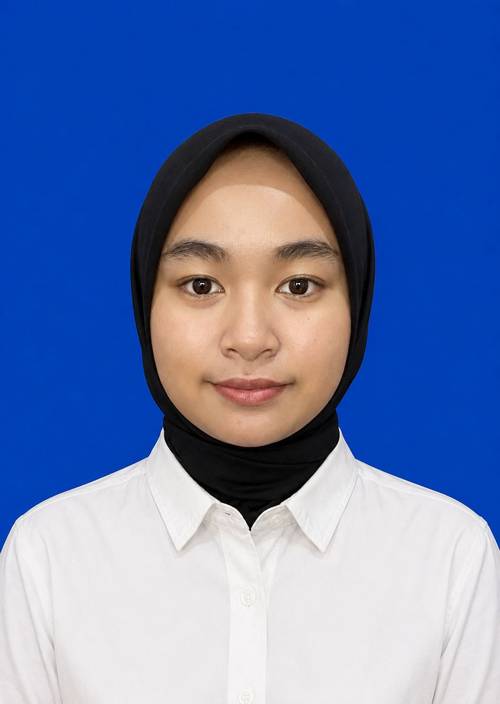

Shintya
+62-857-8764-8802 | s76680482@gmail.com
Jl. Hksn Komplek Dasamaya 1 RT.17 RW.02 No. 104

PROFIL
Memiliki pribadi yang jujur, disiplin, bertanggung jawab, dan memiliki semangat tinggi untuk
belajar hal-hal baru. Saya mampu bekerja sama dalam tim maupun secara individu, mudah
beradaptasi dengan lingkungan kerja baru, serta memiliki kemampuan komunikasi yang baik.
Saya siap menerima arahan, mempelajari keterampilan baru, dan memberikan kinerja terbaik
demi mendukung kemajuan perusahaan.
PENGALAMAN
Belum memiliki pengalaman kerja. Namun, saya memiliki motivasi yang tinggi untuk belajar,
mengembangkan kemampuan, serta siap mengikuti pelatihan dan menjalankan tugas dengan
penuh tanggung jawab sesuai arahan yang diberikan perusahaan
PENDIDIKAN
- Politeknik Negeri Banjarmasin (2025 - sekarang)
Bisnis Digital | IPK 3.46/4.00
- SMA Negeri 1 Lahei Barat
Departemen ilmu sosial (2022 - 2025)
KEMAMPUAN
- Kreatif.
- Teliti.
- Loyal.
- Mampu mengikuti instruksi.